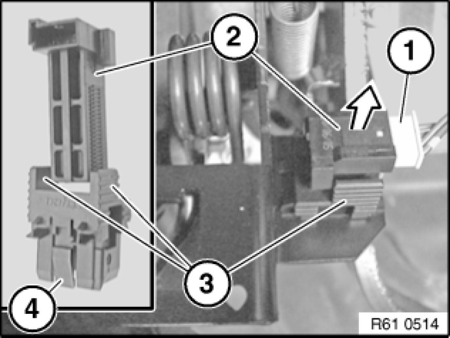

Brake Light Switch: Service and Repair
61 31 310 - Replacing brake-light switch

Necessary preliminary tasks:
- Remove trim panel for pedal assembly 51 45 185 Removing and Installing/Replacing Panel For Pedals

Note:
Brake light switch (2) is situated above the brake pedal.
Disconnect plug connection (1).
Pull brake light switch (2) in direction of arrow out of brake light switch holder (3).
Press catches (4) together and unclip brake light switch holder (3) from brake pedal.
Installation:
Depress brake pedal.
Slide brake light switch (2) as far as it will go into brake light switch holder (3).
Grip brake light switch holder (3), slowly return brake pedal to starting position and pull back to stop.